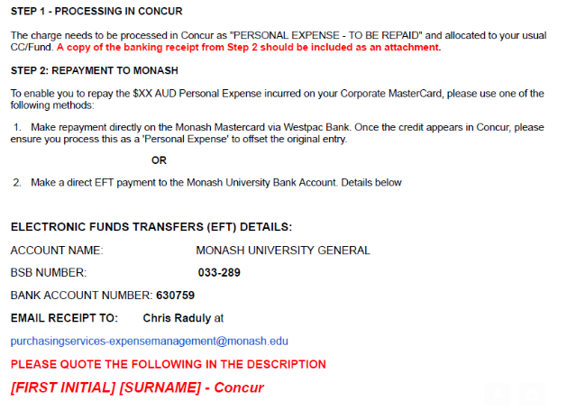

Using the light board
Where: second floor, next door to Manny's office; you will need a key card to enter and to activate the light boardStart filming: press the red peddle; there are two cameras... look at the one on the left.
stop filming: press the stop buttom on the left-hand control panel. I recommend staring into the camera for two full seconds before pressing the stop button to avoid sudden transitions in between segments.
Speaking next to a powerpoint presentation:
Plug your laptop into the red "background" cable. On the left-hand control panel, press "black" and "lapS".Speaking while reading your notes:
Plug your laptop into the black "Notes" cable. Alternatively, you can put your notes on the desktop computer.viewing your recording: the recordings are accessible on s-drive here: Sci-Global/Lightboard/Today/
For details on how to connect to s-drive, see below.
Editing your recording:
Edit your recording with apple iMovie. Click on All Projects (left-hand). Click "Create +" (top). Drag the clips onto the bottom of the page. Crop as necessary by hovering the cursor over the edges until the cropping symbol appears. Then drag to crop. To add transitions, click on "Transitions" (bottom left). Drag "Cross Dissolve" onto the bottom of the page in between clips. To export: click share (top) > file. This may take ~ten minutes.
Performance Development Online (PDO):
Word on the street is PDO is a "box-checking activity." It is necessary for PDO to be up-to-date, e.g., to apply for promotion.
They have to be updated every six months or so.
Overview: Add CV to portfolio attachments.
Career aspirations: fill in
3 year goals: add goals for Research, Education, Service
Leadership: skip unless you're a Dean
Workload Allocation: fill in
Link.
Click: Log into myPlan.
How do I receive IT assistance?
Contact Monash esolutions: 5-1777.
How do I request a license for Mathematica that I can use without being connected to the Monash intranet?
Visit this web page and click on the link to request a license.
What is the shipping address for the School of Physics and Astronomy?
Faculty of Science Store
ATTN: Dr. Eric Thrane
Building 23: 17 Rainforest Walk
Wellington Rd, Clayton
Monash University, 3800
How do I find documents located on s-drive (Mac)?
1. Press CTRL-K.
2. Connect to smb://ad.monash.edu/shared
3. There are two disks mounted here: Sci-Global and Sci-Physics.
4. Sci-Physics is the "s-drive."
SPA Google calendar:
Folow this link.
Click on the "+ Google Calendar" button in the lower-right-hand corner of your browser to add the calendar to your list of "Other calendars".
Handling lists of applicants on REX:
Select All > Bulk Action > Bulk PDF > Acrobat Viewer > Table of Contents
Wiki for Education Commmittee: on moodle
accessing electronic journals with VPN:
If you want to access this url: http://journals.aps.org/prl/abstract/10.1103/PhysRevLett.99.221301
paste the following into your browser: http://journals.aps.org.ezproxy.lib.monash.edu.au/prl/abstract/10.1103/PhysRevLett.99.221301
How to use google drive, e.g., to edit SBoS unit amendments:
1. If someone has something on google drive, they must elect to share it with you.
2. Now, log on to your drive.google.com
3. Click on "Shared with me"
4. In this particular example, click on SPA Teaching > SBOS > 2016 Unit Ammendments.
Can we add a new MoCA postdoc to the People page, and get her on the mailing lists?
https://groupadmin.monash.edu/
Teaching: general info
When do my classes meet? (schedule)Go to https://staff.monash/
Click on: Teaching and learning
Click on: Class timetable
Click on: Staff in Australia
Click on: Unit Timetables. (DO NOT click on “staff login” as nothing will happen!)
Click on either: "Semester 1 (Official Calendar)" or "Semester 2 (Official Calendar). (DO NOT click on “Full Year” because no units run for the entire year.)"
Select Organisational Group = SCI School of Physics and Astronomy
Select Weeks = Full Year (Extended)
If you have enabled pop-up windows, the timetable will open in a new window; I use chrome, which has a little button in the top-right corner to enable pop-ups for this web page. Some blocks on your timetable may be marked DNP, which stands for "do not publish." These are back-up times that will be made available only if enrolment is surprisingly high.
Setting up moodle preview
Moodle preview replaces some of the functionality of the unit guide, and we now use it like one in PHS1011. * To get a link to the moodle preview, log on to moodle, click on the gear, click on Manage Unit Preview, and finally, click on PHS1011.How to set up a clicker question (Mac OS):
1. Open TurningPoint.
2. Click on "PowerPoint Polling." This will open PowerPoint.
3. Open the PowerPoint file to which you want to add a clicker question.
4. In the top-left corner of the TurningPoint toolbar, click the "New" tab, and select "Multiple Choice." Edit the replies appropriately.
5. Plug in USB clicker antenna.
6. Click "Start" on the TurningPoint menu bar (top-right corner). This should launch full-screen mode, and a second, different TurningPoint menu bar should appear.
7. Advance slides to clicker question. When you get there, press the triangular green play button on the (other) TurningPoint menu bar. When voting is finished, press the red, square stop button. The results of the poll should appear as a bar graph.
8. Note, some older slides, created with Windows and/or earlier software may need to be regenerated.
How to save the answers to clicker questions with TurningPoint
1. After the lecture, close TurningPoint.
2. You will be prompted about whether or not to save the session data. Select yes. This saves a .tpzx file.
3. Later, open the tpzx file in TurningPoint.
4. Select "Results by Participant" under the "Mangage" tab.
5. Export as csv.
How to set up a printer (Mac):
Follow Amanda Karakas' instructions here.
Help: my print jobs are hanging!
Were you forced to update your password recently? If so, you may need to update your keychain. Open the Keychain Access app on your mac. Search "All Items" for the string mupc or "print" or "Monash" in order to find a key called "Monash Print" or something similar. Delete this key. Now you should be able to print.
How to print powerpoint handouts with 4 slides per page.
1. Select Print.
2. Find the box that says "Print What".
3. Change the tab from "Slides" to "Handouts (4 slides per page)".
How do I find past exams?
Click on this link for the Monash library.
Search for the phrase: PHS1011 exams.
You will get a fairly complete list of past exams.
Audio/video recordings of lectures are available on echo360.
How do I request recordings of my lectures with MULO?
Click on "recording requests" on the right side of this page.
What is a typical average score for first-year physics tests and exams: 55-65%.
When is the final exam for my class?
1. go to my.monash.edu.au
2. click on examination timetable
3. enter unit code
Note that the timetable may not be available until late into the semester.
How do I purchase something in excess of my credit limit?
See section below on coupa.
Teaching: moodle
Uploading feedback files: instructions from SCI2010: docxEnrolling new observers in moodle.
1. Click on "users"
2. Click "enrolled users"
3. Click "manual enollment" and select the "filter" button
4. Click "enrol users"
5. Select "assign roles = observer" or "non-primary lecturer"
6. Search by full name
7. Slect "finish enrolling users"
How do I check student grades on moodle?
1. Click on Administration>Grades
2. Click on the little box next to each student to get the student view.
How do I make a moodle unit visible to students?
Go into the PHS1022 site
Go to the administration block (usually left hand side)
In "unit administration" click "edit settings"
In "General", change "visible" from "hide" to "show".
How do I enter marks for an honours assignment?
1. Navigate to the appropriate unit in moodle. 2. Select "Mark Entry" from the bottom of the grey LHS bar. 3. Click on the assignment you want to grade. 4. Click "View all subimssions" 5. Click the "Quick Grading" box if it's not already checked. 6. Use your track pad to push the spreadsheet to the left. This will reveal a column for you to enter marks. 7. Do not click the "grade" button. Click "Save all quick grading changes."
How do I change the number of marks possible for an honours assignment?
1. Open the assignment. 2. Click on the "Administration" tab on the LHS. 3. Select "Edit Settings" 4. Scroll down and click on grade. 5. There is a field to adjust the total marks. Note, that you cannot change this if you have entered some student marks without toggling something.How do I change the number of points for an assignment on moodle?
In Moodle, go to the topic "Mark Entry" and edit the assignment. Among the assignment options is the number of marks for the assignment.
How do I create a Moodle quiz for PHS1022?
1. Click on the left-hand-side "Administration" tab.
2. Select "Administration / Question bank"
3. If this is the first quiz, select "Question bank / Categories"
4. Create a new category "Daily Quiz" under "Default".
5. Go back to Question Bank and click on "Create a new question."
6. Create a question and add four answers. Use $$x$$ for latex math. The "grade" for each choice should be "None" except the correct answer, which should have a grade of 100%. The default mark should be 1. Give the question a name like Rotation 1-3.
7. Once you have one question created, you can make new questions by clicking the duplicate button next to that question.
8. Once your quiz questions are done, go to Aministration / Moodle Quizzes.
9. If you have already created a quiz, duplicate the old quiz in order to copy over the old settings and skip to 11. Otherwise go to 10.
10. Add activity/resources = quiz. Make sure the quiz is hidden! Choose the following settings: attempts allowed = 1, in-semester assignment, time limit = 5 minutes, grade = 100%, turn off shuffle setting, max grade = 3.
11. Click the quiz you want to edit, e.g., "Rotation 1". Select Adminstration / Edit quiz.
12. Find the "Question Bank" column on the right hand side. Filter quizzes using the category Daily Quiz. Select the question you want to add by clicking on the <$lt; symbol. Select Save when you are done.
13. Preview your quiz by selecting the quiz, then clicking on Amdminstration / Preview. If you catch a mistake, you can edit it here.
14. Immediately before class make the quiz visible. If you show slides, show one per 100 seconds. After the quiz is over, hide it on moodle.
How do I edit a Moolde quiz that already exists?
click on quiz
administration > edit quiz
Panopto
For Panopto first thing that had to happen was our units needed to "be provisioned" (link set up between moodle and panopto). I have now provisioned both units so no need to worry about this (I can tell you the details if you need them). NOTE: you must log out of moodle and log back in to see newly provisioned units. Next step is getting into panopto proper: 1. go to https://monash-panopto.aarnet.edu.au/ 2. sign in, using authcate Next navigate to the moodle generated panopto folder: 1. on the left list click Browse Click on "Moodle" 2. scroll down and find PHS1011 To add content: 1. Click create. 2. Select upload media from the drop down menu 3. As per the instructions there either drag and drop media files into the area in the panopto window, or click the area to open a file browser and find and select your media. Following the upload, click on the background screen. This initiates a necessary "processing" step. Since the moodle is linked to panopto the system should now automatically enable people in the unit to view (or lecturers to add or edit or remove) media. Note that students won't be able to access panopto links without first logging into moodle, so be sure to note this when including links. TO MOVE CONTENT FROM LAST YEAR: 0. log on to https://monash-panopto.aarnet.edu.au/ with okta account 1. Navigate to your videos, e.g., in My Folder or by searching for a previous PHS1011 folder. 2. Select videos you want to copy. 3. Click the "move" button.
Movie ticket vouchers for correct answers to challenge questions
Village Cinemas
Teaching: CEED
1. First, sign up for "Capture your learning and teaching engagement."2. Sign up for a second class from OVLT, e.g., "Fostering collaborative learning".
3. Wait for Barb and Jasmina to email about the Faculty of Science module.
Setting up a new moodle page
1. Contact Lisa to request a new page.2. Turn on editing, click on "Administration" on the RHS, click on "Users," click on "Enrolled Users," enrol members as Lecturers.
3. Edit section names: Click on the cog symbol below the current topic name (turn editing on to see this, when you mouse over it says "edit summary" Untick the box which says "use default section name", then you can type a new section name.
4. Remove sections: If the topic you want to delete is not already the last topic: Click on the move icon to the upper left of the topic name and move it to be the last topic. Alternatively click and hold the move icon, and drag it until it is the last topic If the topic you want to delete has content in it, delete all the content individually. Go to Administration -> Unit Adminstration -> Edit Settings In "Unit Appearance", reduce the number of topics. If you reduce by one, it will delete the last topic. I know this is a ridiculous way of deleting topics, currently the only documented way of doing so. If you reduce the number of topics without deleting all content from the last topic, the content in that deleted topic will appear as "Orphaned items", in a list below the last topic. They may not appear immediately, but will do so eventually. You can then move them elsewhere or delete them.
5. Adding topics: Go to Administration -> Unit Adminstration -> Edit Settings In "Unit Appearance", increase the number of topics. This will add new topics after current existing topics. You can then reorder them using the move icon. Whenever you move, delete, or add a topic, Moodle may then display the wrong topic names. Refresh the page to fix this.
Travel and Finances
Coupa
Coupa is a system by which you can obtain a "virtual credit card" to pay for a one-time expense. It is required when your credit card is maxed out or when you are purchasing something that exceeds your credit limit. You submit a request for this virtual credit card which requires an invoice, fund numbers, details about the expense, etc. You wait while the finance team decides whether or not to approve the purchase. If they do, they send you the virtual credit card numbers, which you can then juse to make the purchase in the same way that you would with a normal credit card. This virtual credit card can only be used once, and it can only be used for the the thing you got approval for. Then, you file a claim with concur the way you normally would. In sum, it coupa is a complicated way to get a virtual credit card when your regular credit card is not up to the job.
If you are buying something for the first time, you'll need to register first here. Click "Request Access for staff".
Subsequent use:
Go to my.monash.
Expenses and purchasing Coupa purchasing portal Access Coupa Click “Write a request” on the top-right” Under "Supplier", select "Credit card payment". Enter the “non-catalogue item description” e.g., “ApJ Letter Fees”. Under “Commodity” select the best option, e.g., "travel ad entertainment, non-concur." If it’s not food/travel, try: Business Services > Corporate Professional Services > Other Professional Services > Other consulting services Click “add to cart.” Under “Billing”, click the little magnifying glass to change the fund number. Press “Submit for approval”
filing an expense report:
log in to my.monash.edu.au
Click "Concur Travel and Expenses."
(If you receive a "Single sign-on failed" message, contact the site admins.)
Repay presonal expense, accidentally charged to Monash:
(thanks, Baysa)
PURE
https://www.monash.edu/myresearch scroll down to find the link for PURE click "Login to Pure" Click on the button to import candidates. There is no button to "import all." You will have to click through everything manually. For each paper, select Import > Import & Save. For papers with hundreds of authors, this can take a couple minutes. You will get a message: "The following fields are required Managing organisational unit Click OK to go to the first field." Click on the box "Research output managed by" and enter "Sch of Physics & Astronomy" Click "Save"
to view your ROPES
https://my.monash.edu.au/research/services/ropes/
click on "My Publications"
To update your ropes, send your entire publication list to sheldon.peters@monash.edu. Don't worry about identifying which ones are important. He will do it. for you. Do assign a FOR code to each one.